Cultura
A cultura turca é um vibrante mosaico de tradições, com influências da Ásia, Oriente Médio e Europa. Ela se reflete na culinária rica, no ritual do chá e café, nas danças folclóricas e nas artes, como cerâmica e tapetes. A hospitalidade é essencial, com generosidade e uma mesa farta sempre à disposição. Explorar a Turquia é mergulhar em uma identidade única, cheia de história, símbolos e um povo orgulhoso de suas raízes.
Afiyet Olsun
A primeira coisa é "Afiyet Olsun", que significa lamber os lábios para expressar a sua gratidão para as pessoas que servem a comida para você. Eles esperam isso de você, por favor não esqueça.
Elinize saglik
Se você for convidado para um jantar turco, expresse a sua gratidão para quem cozinhou e fala para ele / ela "elinize saglik", a tradução literalmente é "sua saúde", mas significa a sua gratidão e felicidade para ser convidado(a) pelo um jantar delicioso.
O pão
Os Turcos adoram o pão e ele é o mais importante tipo de comida para eles. Eles comem-lo com todos os pratos principais e nas três refeições. Então se você vai fazer um banquete para convidar os Turcos, não esqueça de adicionar uma quantidade generosa de pão, e se você for convidado pelos Turcos não esqueça de comer pão.
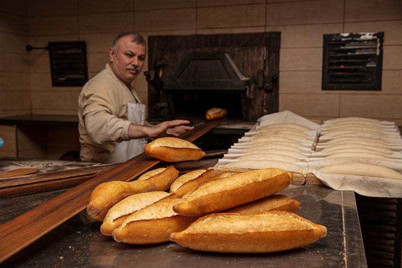
Kurdan (Palito de Dente)
Tem certeza de que ninguém está olhando para você enquanto você está limpando os seus dentes com o fio dental ou o palito de dente, porque não é bom que os outros vejam as coisas que estão saindo dos seus dentes. Por isso enquanto você está limpando com uma mão, use a outra para cobrir a sua boca de jeito que ninguém pode ver.
A etiqueta dos vizinhos
Os Turcos sempre pensam nos outros e são carinhosos e generosos com os seus vizinhos, quando eles fazem comidas gostosas ou doces deliciosos eles sempre mandam um prato cheio para os seus vizinhos. Depois, ao retorna o prato, eles enviá-lo com outro tipo que comida.
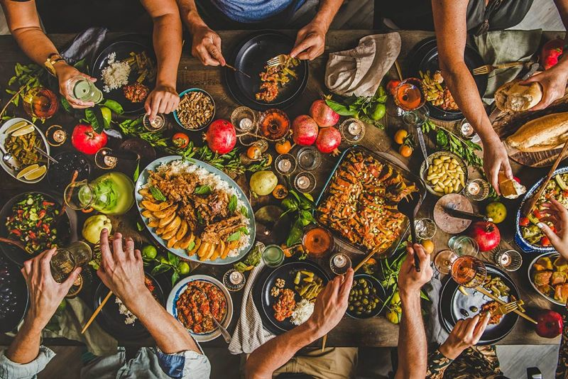
Iogurte
O Iogurte é um alimento muito gostoso que é feito do leite, os Turcos usam muito na cozinha deles, principalmente para cozinhar o Kebap, eles também consomem com outros tipos de comida, principalmente no jantar.
O Chá Preto
A bebida nacional dos Turcos é o chá-preto, que é feito das folhas de chá-preto cultivadas na região do Mar Negro, e servidas num copo pequeno com açúcar. Os Turcos amam essa bebida de um jeito que eles não passam um dia sem tomar um ou dois copos de chá. Então quando você viajar para lá não deixe de aproveitar.
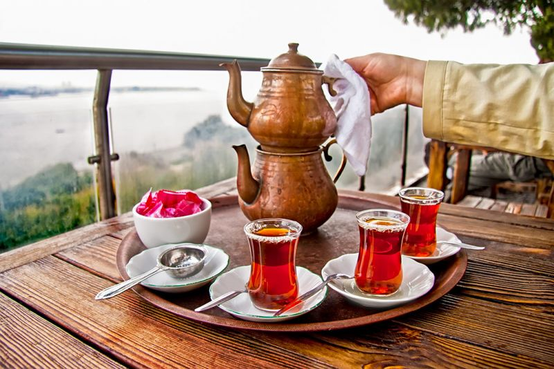
Tire os seus sapatos
Antes de entrar em casas, mesquitas e templos, tire os seus sapatos e deixe-os do lado de fora. Os Turcos nunca entram com os seus sapatos nos ambientes, para manter a limpeza e evitar trazer a sujeira da rua para os lugares.
Os Turcos são um povo receptivo
Eles adoram o povo brasileiro. Se você conhece uma família turca provavelmente você será recebido com um grande banquete. Não negue os convites porque é considerado muito ofensivo.
O Dolmus
É um micro ônibus coletivo usado nas cidades grandes da Turquia. Alguns têm rota definida e outros levam seus passageiros até o lugar que cada um precisa chegar. O motorista de Dolmus inicia a viagem quando há passageiros suficientes para encher o veículo.
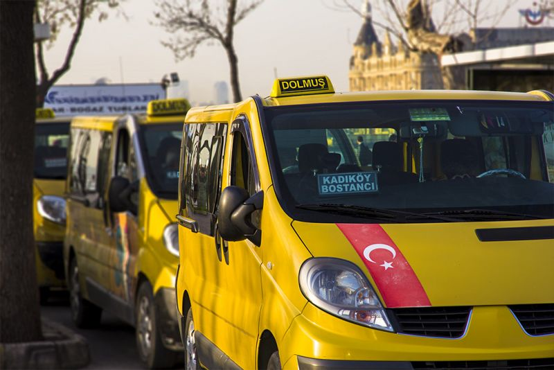
Não dê uma faca para um turco e nem receba
Outra tradição que parece muito engraçada é que os turcos não dão e nem recebem facas de alguém, porque eles acreditam que isso aumenta a probabilidade de ter uma briga no futuro com quem te deu o objeto. Há um jeito para entregar a faca, você a coloca na mesa ou em qualquer outro local, e em seguida a outra pessoa pega. Se por acidente um turco pegou uma faca da mão de outro, é necessário que os dois cuspam na faca para evitar os efeitos negativos no futuro.
Os cumprimentos
Uma coisa muito comum é que os homens se cumprimentam com abraços e beijos no rosto de, é uma forma espontânea entre os amigos. É muito difícil ver homens cumprimentando mulheres desconhecidas com beijos no rosto. Também é muito normal que as pessoas mais velhas recebem beijos nas mãos dos membros mais novos da família.
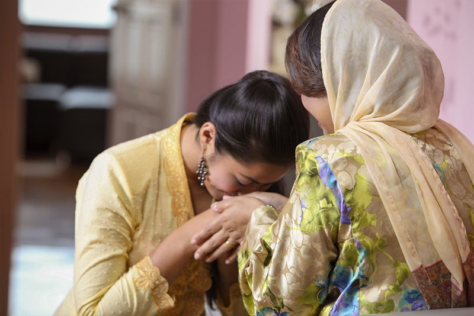
Falam sobre a sua vida financeira
A vida financeira na Turquia não é um assunto privado. Os amigos contam quanto eles ganham por mês, da mesma forma que nós falamos sobre o futebol ou sobre as viagens de férias. É uma coisa normal para eles. Por isso se alguém te pergunta quanto você ganha, não fique chocado(a).
Boa sorte
O Nazar Boncuk, que é também conhecido como olho turco é um símbolo conhecido na turquia e em muitos países no oriente médio também. Eles acreditem que ele ajuda a evitar o azar e o mau olhado.
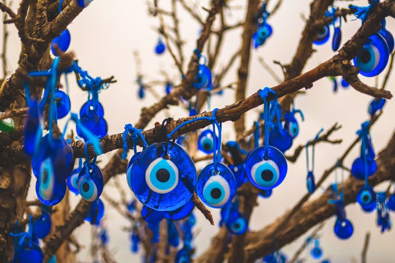
Homens carregando uma bolsa de mão
É muito normal na Turquia que os homens usem bolsas de mãos geralmente na cor preta, é simplesmente por ser prático. Eles também podem sentar de pernas cruzadas ou andar de braços dados.
Os alunos recebem o professor em pé na sala de aula
O respeito aos professores na Turquia é uma coisa séria. os alunos recebem os seus professores em pé cumprimentando o professor deles com "Bom dia". Eles só se sentam depois que o professor permite e diz que podem se sentar.
Um minuto de silêncio
Se você estiver nas ruas da Turquia no dia 10 de novembro, exatamente às 9h e 05 da manhã, vai perceber que de repente acontece um minuto de silêncio. Os turcos param todas as suas atividades, no comércio, nas casas, no trânsito no qualquer lugar por um minuto. Essa é uma lembrança de Mustafa Kemal Ataturk, o fundador da Turquia.
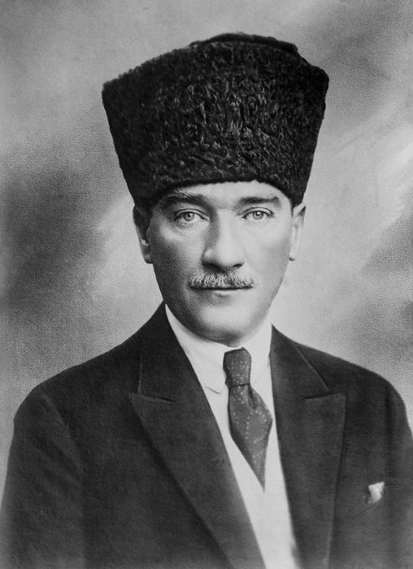
O Casamento prometido
Ainda hoje na Turquia, há pais que forçam seus filhos e suas filhas a casar com quem eles mandam. Às vezes os pais prometem seus filhos em casamento logo ao nascer ou desde a infância e quando crescem eles deverão se casar. As mães que tem filhos na idade de casamento entram nas casas para identificar as moças em idade de casamento.
O Casamento normal
Na Turquia, ao pedir casamento, se a moça não gostar, sua família envia desculpas. Se ela gostar, a família do moço convida a dela para um jantar, seguido de um noivado com uma festa pequena. O noivo oferece presentes à noiva, e o casamento ocorre em até um ano. A família da noiva cuida da cozinha, cortinas e quarto, enquanto a do noivo se encarrega da casa e da festa.
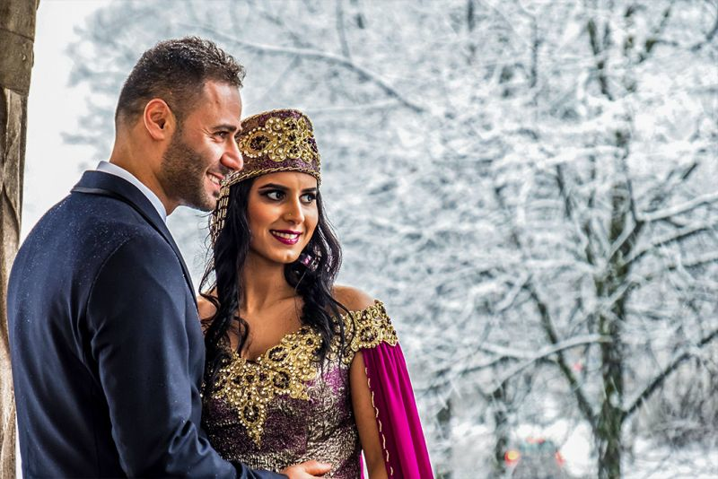
A viúva casa com o irmão do marido dela
Quando o marido de uma mulher morre ela deve se casar com o irmão dele se ele tiver um irmão, e nenhum dos dois pode negar ou recusar esse casamento.
Kına Gecesi (A noite de Henna)
Uma celebração feita no dia antes do casamento na casa da noiva. As convidadas dela são as mulheres da sua família e as suas amigas. Nessa noite a noiva aplica henna nas mãos e pernas. Também as convidadas dela podem aplicar henna. Elas passam a noite cantando, dançando e celebrando.
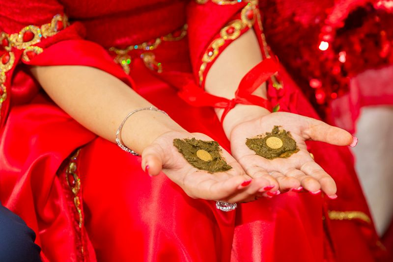
Algumas expressões importantes que você precisa saber
Antes de viajar para qualquer destino é importante saber as expressões cotidianas tipo, bem-vindo, que significa “Hos Geldiniz”, ou quando um amigo fica doente e você precisa dizer para ele fica bem rápido, isso significa “Gecmis Olsun”. Não fique preocupado(a) se você não se lembrar dessas expressões, os Turcos são receptivos e adoráveis.
A gravidez e as crianças
Os Turcos gostam de crianças e adoram ser país. Logo depois do casamento eles procuram ser pais. A mulher grávida recebe muitos presentes e cuidados. Quando o bebê nasce ele/ela recebe também muitos presentes como O Nazar Boncuk (O Olho Turco) para protejer o bebê do azar e o mau-olhado.
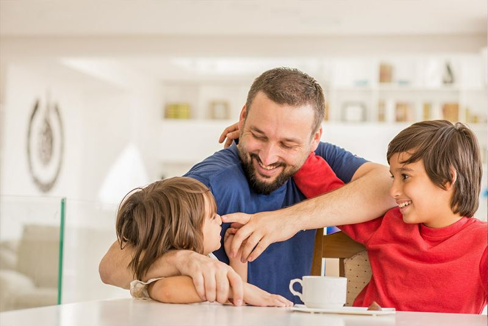
O Hamam Turco ou Banho Turco
O Hamam Turco é um tradicional banho de vapor com temperaturas entre 40-50°C, usando folhas de eucalipto. Ele inclui massagem personalizada e duchas quentes e frias, promovendo hidratação, relaxamento muscular, e alívio do estresse. A prática, presente em várias civilizações, é retratada na pintura "Le Bain Turc" no Museu do Louvre.
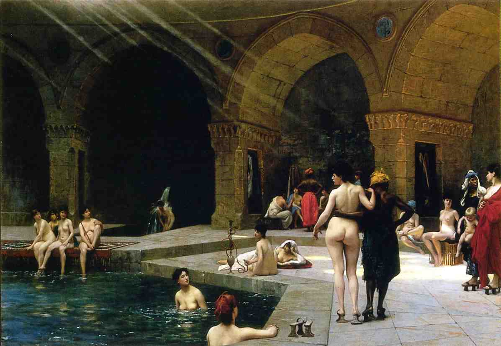